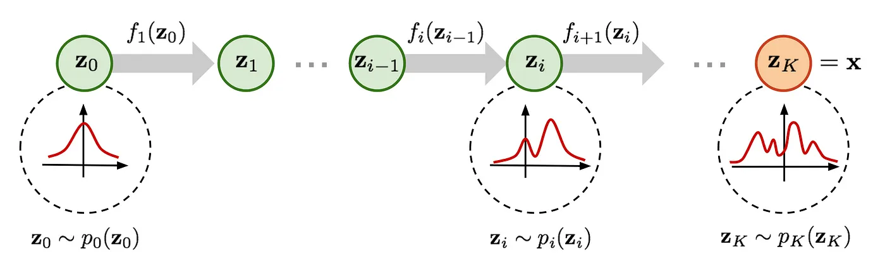

最大似然估计
生成模型可以根据其目标和方法分类
| 模型类别 | 目标 | 典型模型 | 应用领域 |
|---|---|---|---|
| GAN | 最小分布距离 | GAN DCGAN、StyleGAN、BigGAN | 图像生成 |
| 隐变量模型 | 最大化对数似然 | VAE, PixelVAE | 图像生成、序列生成 |
| 概率密度估计 | 最大化对数似然 | Normalizing Flow, Energy-Based Models | 密度估计、图像生成 |
| 逐步最大似然估计模型 | 逐步最大化对数似然 | DDPM、Latent Diffusion Models (LDM) | 图像生成、补全、超分辨率 |
| 自回归模型 | 最大化条件对数似然 | 自回归模型 | 图像生成、补全、超分辨率 |
| 几何/物理约束模型 | 最小化重建误差 | NeRF, DeepSDF | 三维建模、视点合成 |
| 规则/统计生成模型 | 基于规则或经验 | Procedural Generation, SMOTE | 数据增强、生成纹理 |
| 离散生成模型 | 离散最大似然估计 | GPT, Transformer | 文本生成、代码生成 |
| 稀疏/压缩生成模型 | 稀疏表示或压缩后重建 | Sparse Coding, Autoencoders | 特征提取、数据压缩 |
| 混合生成模型 | 结合多个生成目标 | VAE-GAN, Diffusion-GAN | 图像生成、高质量数据生成 |
主要生成任务使用的方法
| 数据类型 | 常用方法 | 特点 | 典型模型 |
|---|---|---|---|
| 图像生成 | GAN、扩散模型、VAE、自回归模型 | 生成质量高，适合单帧图像生成，多样性和控制性视模型而定 | StyleGAN、DDPM、PixelCNN |
| 语音生成 | 自回归模型、谱图生成、GAN、扩散模型 | 高保真语音生成，常结合声码器完成端到端生成 | WaveNet、Tacotron、HiFi-GAN、DiffWave |
| 视频生成 | GAN、自回归模型、扩散模型、混合模型 | 视频生成需要考虑时间一致性，模型更复杂，生成质量依赖于时间和空间的建模能力 | MoCoGAN、VideoGPT、Video Diffusion Models |
接下来我们主要介绍在最小距离分布和最大似然估计的框架下，怎么统一解释不同的生成模型。同时最大似然估计是最小分布距离的一种特例，我们其实可以在”最小距离分布“这个统一的框架下来解释生成方法的原理。
记住这个公式，最大似然估计的表达式
从离散的角度，最大似然估计表示为
定理1. MLP 是最小化分布差异的特定形式
证明: 先说明结论：两个分布间的“距离”可以用不同的指标来衡量（如 KL 散度、Jensen-Shannon 散度、Wasserstein 距离等）。MLE 的目标是最小化 KL 散度：
因此，MLE 可以被认为是以 KL 散度 作为距离衡量标准的特例。 下面我们只要证明MLP目标等价于优化KL散度就行。
其中
展开为
第一项和\(\theta\) 也就是模型无关，因此可以忽略。第二项和\(\theta\)有关，因此可以看成KL的目标。
另外MLE的原始定义为
从这个角度从新不同的生成模型，包括VAE, GAN, Diffusion等等，它们的目标都是最小化生成分布和原始数据分布的差异(距离)的最小化。
定理2：gan的优化目标等价最小化分布距离
GAN的目的是最小化分布差异，其中vanila GAN的目的是最小化两个分布之间的JSD散度, WGAN的目的是最小化连个分布之前的Wasserstein距离
证明：
1. Vanilla GAN 的优化目标与 Jensen-Shannon 散度
1.1 GAN 的优化目标
GAN 的目标函数由生成器 \(G\) 和判别器 \(D\) 的对抗博弈组成：$ \min_G \max_D \mathbb{E}{x \sim p{\text{data}}} [\log D(x)] + \mathbb{E}_{z \sim p(z)} [\log (1 - D(G(z)))] $
其中：
-
\(p_{\text{data}}(x)\)：真实数据分布。
-
\(p_\theta(x) = G(z)\)：生成分布。
1.2 判别器的优化
对于固定的生成器 \(G\)，判别器 \(D\) 的目标是最大化：
优化 \(D(x)\)：
假设 \(D(x)\) 输出的值是 \(D(x) \in [0, 1]\)，对其求导并找到最优解
此时最优判别器 \(D^*(x)\) 表示输入样本来自真实分布的概率。
1.3 将最优判别器代入损失
将 \(D^*(x)\) 代入 GAN 的目标函数，得到生成器的优化目标：
化简：
其中 \(D_{\text{JS}}\) 是 Jensen-Shannon 散度 ，定义为：
\(m = \frac{1}{2}(p_{\text{data}} + p_\theta)\)。结论： Vanilla GAN 的优化目标是最小化生成分布和数据分布之间的 Jensen-Shannon 散度。
2. WGAN 的优化目标与 Wasserstein 距离 2.1 WGAN 的目标函数
WGAN 的目标函数是：
2.1 约束条件：
-
判别器 \(D(x)\) 不再输出概率，而是标量值。
-
\(D(x)\) 是 1-Lipschitz 连续函数，即满足 \(|D(x_1) - D(x_2)| \leq \|x_1 - x_2\|\)。
2.2 Wasserstein 距离定义 Wasserstein 距离（\(W_1\) 距离）定义为：
其中 \(\Pi(p_{\text{data}}, p_\theta)\) 是所有使边缘分布为 \(p_{\text{data}}\) 和 \(p_\theta\) 的联合分布。 根据 Kantorovich-Rubinstein 对偶性，Wasserstein 距离可以重写为：
3. 总结
-
Vanilla GAN： 判别器 \(D\) 输出的是概率，优化目标是最小化生成分布和真实分布的 Jensen-Shannon 散度（JSD）。
-
WGAN： 判别器 \(D\) 输出的是标量值，优化目标是最小化生成分布和真实分布的 Wasserstein 距离（\(W_1\)）。
-
两者的本质： 都在通过不同的分布差异度量指标优化生成分布 \(p_\theta(x)\) 逼近真实数据分布 \(p_{\text{data}}(x)\)。
4. 备注
在wgan 中为什么出现了Lipschitz 条件。这是因为 Kantorovich-Rubinstein 对偶性要求目标函数 \(𝑓(𝑥)\) 是 1-Lipschitz 函数。如果没有这个条件，Wasserstein 距离无法通过对偶形式计算。 在 WGAN 中，判别器 D(x) 实际上是 f(x) 的实现，因此需要满足 Lipschitz 连续性，保证优化目标与 Wasserstein 距离的数学定义一致。
从另外一个角度说明：判别器\(D\)的作用可能不一致，但是D的loss 都表示了两个分布之间的距离，分别是JSD 散度和Wasserstein 距离。优化\(D\) 的作用及时让这个Loss 尽量准确模拟出两个分布之间的距离。如果把这个loss \(L_\theta(x,y)\) 作为一个函数看待,它在训练过程中学习的就是两个分布之间的距离的近似。
当然在上面的分析中，我们是知道了GAN的实现，然后证明了它的作用。
理论上我们衡量两个分布之间的距离有不同的选择，那在"GAN"的设计中，我们就可以根据不同的距离选择可以让我们去设计不同的D和D的loss。
那么假设我们想要用KL 散度去衡量两个分布之间的距离，那是不是可以设计出相应的loss。 答案是肯定的，
我们可以推导出对特定散度的优化近似于 \(\min _\theta \max _\omega F(\theta, \omega)=\mathbb{E}_{x \sim P}\left[T_\omega(x)\right]-\mathbb{E}_{x \sim Q_\theta}\left[f^*\left(T_\omega(x)\right)\right]\).
从而KL散度对应的loss 则为
参考这个论文 https://arxiv.org/pdf/1606.00709 了解更多散度对应的loss
广泛含义上的分布之间的衡量设计
| 距离衡量方法 | GAN 类型 | 优势 | 劣势 | 论文链接 |
|---|---|---|---|---|
| Jensen-Shannon 散度 | Vanilla GAN | 理论基础清晰，目标明确 | 梯度消失，模式崩溃 | Generative Adversarial Nets |
| Wasserstein 距离 | WGAN | 更稳定的训练过程，有意义的梯度 | 计算代价高，需强制 Lipschitz 条件 | Wasserstein GAN |
| f-散度 | f-GAN | 灵活的散度选择，适应不同任务需求 | 需选择合适的 f-散度 | f-GAN: Training Generative Neural Samplers using Variational Divergence Minimization |
| MMD（最大均值差异） | MMD-GAN | 核函数灵活，高维数据表现优越 | 核函数选择影响性能 | MMD GAN: Towards Deeper Understanding of Moment Matching Network |
| Sliced Wasserstein 距离 | Sliced-WGAN | 改善高维数据的训练稳定性 | 需要选择适当的投影方向 | Max-Sliced Wasserstein Distance and Its Use for GANs |
| Sobolev 距离 | Sobolev GAN | 放宽 Lipschitz 条件，提高训练灵活性 | 理论复杂性增加 | Towards Generalized Implementation of Wasserstein Distance in GANs |
定理3: VAE 是对最大似然的优化
证明
- 连续分布的最大似然估计目标
对于观测数据的概率分布 \(p_{\text{data}}(x)\)，最大似然估计的目标是最大化数据分布下模型 \(p_\theta(x)\) 的对数似然：
这里我们需要找到一种办法去表达或者近似 \(p_\theta(x)\)。 这是关键的一部分。 对于隐变量生成模型而言，会有一个\(z\) 和\(X\)的对应关系，
我们可以写成 \(p_\theta(x) = \int p_\theta(x, z) \, dz\) 包含对隐变量 \(z\) 的积分。再对\(z\) 做一些假设，可能就会简化求解的过程。
- 重写边缘似然
对于单个数据点 \(x\)，观测数据的边缘对数似然可以写为：
利用联合分布的分解 \(p_\theta(x, z) = p_\theta(x \mid z) p(z)\)，我们有：
直接优化这个目标通常很困难，因为积分 \(\int p_\theta(x \mid z)p(z) dz\) 对于高维 \(z\) 不可解析。
- 引入变分分布 \(q_\phi(z \mid x)\)为了解决积分不可解析的问题
引入一个近似后验分布 \(q_\phi(z \mid x)\)，用于近似真实后验 \(p_\theta(z \mid x)\)。我们可以通过以下分解重新表示 \(\log p_\theta(x)\)：
证明细节请看 ELBP证明。ELBO也可以由凸函数的性质利用 Jensen's inequality直接推导出不等式(https://en.wikipedia.org/wiki/Evidence_lower_bound).
其中：
-
第一项是变分下界（Evidence Lower Bound, ELBO)),我们可以优化它来间接优化 \(\log p_\theta(x)\)。
-
第二项是 KL 散度，表示近似后验 \(q_\phi(z \mid x)\) 与真实后验 \(p_\theta(z \mid x)\) 的差距。
由于 KL 散度总是非负：\(\mathrm{KL}(q_\phi(z \mid x) \| p_\theta(z \mid x)) \geq 0\)，所以：\(\log p_\theta(x) \geq \mathcal{L}(\theta, \phi; x)\), 其中\(L\) 表示变分下界,也就是 ELBO，为上式的第一项。
- . 变分下界（ELBO, 设为 $ \mathcal{L}$）的分解
变分下界的具体形式为：
进一步分解联合概率 \(p_\theta(x, z) = p_\theta(x \mid z)p(z)\)，得到：
- 第一项 \(\mathbb{E}_{q_\phi(z \mid x)} [\log p_\theta(x \mid z)]\)：重构误差（Reconstruction Error），鼓励生成器能够生成接近真实数据 \(x\) 的分布。 这个没法直接计算。如果用蒙特卡洛采样的话，也需要有 \(p_\theta(z|x)\)的值，但是这个值也是不可解析的。 因此在原始的论文里，假设 \(p_\theta(z|x)\)是一个高斯分布，这样就可以计算。
如果我们假设 \(p_\theta(x|z)\) 是高斯分布：$ p_\theta(x|z) = \mathcal{N}(\hat{x}, \sigma^2 I), $ 其中 \(\hat{x}\) 是解码器生成的均值，\(\sigma^2\) 是固定方差。 对数似然展开：
$$ \log p_\theta(x|z) = \log \mathcal{N}(x; \hat{x}, \sigma^2 I) = -\frac{1}{2} \left( \frac{|x - \hat{x}|^2}{\sigma^2} + d \log(2\pi\sigma^2) \right), $$
其中 \(d\) 是 \(x\) 的维度。
重构误差等价于负对数似然，忽略常数项后为：
$$ \mathbb{E}{q\phi(z|x)}[-\log p_\theta(x|z)] \propto \mathbb{E}{q\phi(z|x)}[|x - \hat{x}|^2]. $$
- 重建误差简化为 \(|x - \hat{x}|\) 在具体实现中，通常假设方差 \(\sigma^2 = 1\) 且重建误差仅考虑均值估计，此时：
$$ \mathbb{E}{q\phi(z|x)}[|x - \hat{x}|^2] \approx |x - \hat{x}|^2, $$
对应的差项为 \(|x - \hat{x}|\) 或其平方形式。
当然如果我们假设 \(p_\theta(x|z)\) 是属于其他分布，那就会导出不同的重构误差。更进一步，对于任意一个重建差的度量，其实都对应着一个\(p_\theta(x|z)\), 这个可以由度量函数去构建一个密度函数。 具体，查看 VAE: introduction
-
第二项 \(\mathrm{KL}(q_\phi(z \mid x) \| p(z))\)：正则化项，约束 \(q_\phi(z \mid x)\) 的分布接近先验 \(p(z)\)。
-
最终形式（VAE 损失函数） 为了优化上述目标，我们需要进行采样 \(z \sim q_\phi(z \mid x)\)。为了解决采样过程中不可微的问题，使用 重参数化技巧（Reparameterization Trick） ：将 \(q_\phi(z \mid x)\) 定义为高斯分布 \(\mathcal{N}(\mu_\phi(x), \sigma_\phi(x)^2)\)，通过如下方式采样：$ z = \mu_\phi(x) + \sigma_\phi(x) \odot \epsilon, \quad \epsilon \sim \mathcal{N}(0, I) $
最终，VAE 的损失函数可以表示为：
这对应于：
-
重构误差 ：通过生成分布 \(p_\theta(x \mid z)\) 学习如何生成数据。
-
KL 散度正则化 ：约束潜变量分布。
优化该目标，即实现从最大似然估计到 VAE 的转化。
从这里我们也能看到，VAE和通常的神经网络构造不一样，它预测的时一个分布，不管编码器还是解码器，预测的都是一个分布。更精确得来说，最初的VAE 编码器预测的时高斯分布的mean 和variance， 解码器预测的时高斯分布的mean。但在实际应用时，我们使用VAE 进行重建时，直接使用的就是这个mean，因此忽略掉了其实decoder 也是本质上预测的是mean.
实际的VAE过程

对于VAE而言，第一项的计算是等价于重建loss 的，关键是第二项需要怎么设计。不同的设计可能就以为着不同的方法。
这里我们列举了一系列对第二项计算的改进方法
| 方法 | 描述 | 优点 | 缺点 | 适用场景 |
|---|---|---|---|---|
| 标准高斯 VAE | 假设 \(q_\phi(z \mid x)\)为高斯分布，编码器输出均值和方差。 | 简单高效，可解析计算 KL 散度。 | 表达能力有限，无法处理复杂分布。 | 常规任务，数据分布简单。 |
| 高斯混合 VAE | 假设 \(q_\phi(z \mid x)\) 是混合高斯分布（多个高斯成分）。 | 能够捕捉多模态分布，更适合复杂数据分布。 | 增加计算复杂度，需要估计更多参数。 | 多模态数据建模，例如聚类或分类任务。 |
| 正态化流 VAE | 用一系列可逆变换构造 \(q_\phi(z \mid x)\)，提高后验分布的灵活性。 | 后验分布更灵活，适合复杂分布建模。 | 增加计算复杂度，需要设计合理的流模型。 | 高维复杂分布的表示和建模。 |
| 离散 VAE | 假设潜变量是离散变量，用 Gumbel-Softmax 技巧实现可微优化。 | 适合离散潜变量空间（如分类或文本生成）。 | 无法捕捉连续分布的细节，对温度参数\(\tau\)敏感。 | 离散数据生成或分类任务。 |
| 能量模型 VAE | 用能量函数定义 \(q_\phi(z \mid x)\),如\(q_\phi(z \mid x) \propto \exp(-E_\phi(x, z))\)，并通过 MCMC 采样。 | 非参数化，能够灵活建模复杂分布。 | 采样效率较低，计算成本较高。 | 高度复杂或未知分布建模。 |
| 对抗式 VAE (AAE) | 用 GAN 的对抗学习替代 KL 散度正则化，判别器用于匹配 \(q_\phi(z)\) 和 \(p(z)\)。 | 不需要显式计算 KL 散度，适合复杂分布。 | 对抗训练可能不稳定，需要精心调试。 | 复杂数据分布生成任务。 |
| β-VAE | 在 VAE 损失中增加 KL 散度的权重 \(1\beta > 1\)，强调潜变量的压缩性和解耦性。 | 提高潜变量的表示质量，更适合表征学习任务。 | 可能导致重构性能下降，平衡重构和正则化较难。 | 表征学习，特征解耦（如生成 disentangled 表示）。 |
| 层次化 VAE | 引入多个层次的潜变量，例如 $z_1 \sim q_\phi(z_1 \mid x), z_2 \sim q_\phi(z_2 \mid z_1) $，捕捉分布的层次特性。 | 能够更好地表示复杂数据分布的层次关系。 | 增加模型复杂度，训练更困难。 | 高维复杂数据，例如图像或自然语言处理任务。 |
总结
对于VAE，直观上看，因为直接估计 \(p_\theta(x)\) 是比较困难的，因此引入分布 \(q_\phi(z)\)，根据 \(p_\theta(x) = \int_z p_\theta(x, z) \, dz= \int_z p_\theta(x|z) p(z) \, dz\) 来计算 \(p_\theta(x)\)。
我们可以选一个\(p(z)\) 比较好计算的分布来简化问题。到这一步，仍然没有办法计算。因此论文里有两个比较重要的假设，
- \(q_\phi(z|x)\) 服从正态分布
- \(p_\theta(x|z)\) 服从正态分布
根据这两个假设从而使得loss 可以计算。第2个假设可以理解成，我们没有办法假设 \(p_\theta(x)\) 服从正态分布，因此弱化一下条件, 那 \(p_\theta(x)\) 相当于混合高斯分布（离散和的极限形式),从这个形式上这个假设是存在合理性的，最终的分布也是能满足多样性的要求。
值得注意的是，这里VAE 都是在极大似然估计的情况下进行推导的。但是衡量两个分布的距离也可以用其他的度量。 可以参考
-
(Wasserstein AE) https://arxiv.org/pdf/1711.01558
-
(GW-AE) https://arxiv.org/pdf/2209.07007
对于不同的假设条件，可以得出不同的实现方案。
normalize flow （NF）
如果映射是可逆的，那么我们就可以直接计算出生成样本的密度函数(分布), 这个时候直接优化最大似然就行了。 
归一化流（Normalizing Flow）是一种概率密度估计方法，其核心思想是通过一系列可逆的变换，将一个复杂分布映射到一个简单分布（通常是标准正态分布），这些变换是由具有可微参数的函数定义的，因此可以通过最大似然估计对模型进行训练。以下是从最大似然的角度详细解释归一化流的原理：
最大似然估计
- 目标：通过最大似然估计复杂分布的概率密度 给定一个数据集 \(\{x_1, x_2, \dots, x_N\}\)，我们希望拟合一个概率分布 \(p_X(x)\) 来描述数据的生成过程。通过最大似然估计（MLE)),目标是最大化模型分布对数据的对数似然：\(\mathcal{L} = \sum_{i=1}^N \log p_X(x_i)\).
由于直接建模 \(p_X(x)\) 可能非常复杂，归一化流通过变换将复杂分布 \(p_X(x)\) 映射到一个简单的分布（如正态分布）。
- 可逆变换与变化公式 归一化流假设数据 \(x\) 可以通过一系列可逆变换 \(f\) 从一个简单的分布 \(p_Z(z)\) 中生成：$ x = f(z), \quad z = f^{-1}(x), $ 其中 \(z\) 是潜在空间中的表示，其概率密度为 \(p_Z(z)\)。根据概率变化公式，\(x\) 的概率密度可以通过变换的雅可比行列式计算为：$ p_X(x) = p_Z(z) \left| \det \frac{\partial f^{-1}}{\partial x} \right|, $
或者等价地： $ \log p_X(x) = \log p_Z(z) - \log \left| \det \frac{\partial f(x)}{\partial x} \right|. $ 这里 \(\det \frac{\partial f(x)}{\partial x}\) 是变换 \(f\) 的雅可比矩阵的行列式。
- 最大似然估计 为了最大化对数似然 \(\mathcal{L}\)，需要计算每个数据点 \(x\) 的对数密度：
-
计算潜在变量 \(z\)： 利用 \(z = f^{-1}(x)\)，将输入数据 \(x\) 映射到潜在空间。
-
计算简单分布 \(p_Z(z)\)： 简单分布通常选择为标准正态分布 \(\mathcal{N}(0, I)\)，因此 \(\log p_Z(z)\) 可以直接通过 \(z\) 的值计算。
-
计算雅可比行列式： 变换 \(f(x)\) 必须设计成易于计算其雅可比行列式 \(\det \frac{\partial f(x)}{\partial x}\)。
最终，通过优化参数，最大化以下对数似然： $ \log p_X(x) = \log p_Z(f^{-1}(x)) - \log \left| \det \frac{\partial f(x)}{\partial x} \right|. $
-
设计归一化流的变换 为了有效训练归一化流，变换 \(f\) 通常需要满足以下要求：
-
可逆性 ：确保 \(f\) 和 \(f^{-1}\) 易于计算。
-
雅可比行列式高效计算 ：使得 \(\det \frac{\partial f(x)}{\partial x}\) 的计算成本较低。
常用的变换包括：
-
Affine Coupling Layer ：只对部分变量进行变换，简化雅可比行列式的计算。
-
Spline Flows ：基于分段函数的流，能够捕获更多复杂性。
-
RealNVP 和 Glow ：利用特定的结构设计高效的变换。
Loss 的公式直观拆解
在归一化流中，对数似然可以写为：
训练的目标是最大化这个对数似然 ，即最小化负对数似然（Negative Log-Likelihood, NLL）：
从直观角度，Loss 的两个部分可以理解为：
-
潜在空间的负对数密度 （\(-\log p_Z(f^{-1}(x))\)）：
-
这个项表示数据点 \(x\) 映射到潜在空间的点 \(z = f^{-1}(x)\) 在简单分布 \(p_Z(z)\) 上的概率密度。
-
直观上，越高的密度表示 \(x\) 被模型解释得越好，Loss 越小。
-
目标是让数据点 \(z\) 更接近简单分布的高密度区域（如标准正态分布的中心）。
-
变换复杂性的代价 （\(-\log \left| \det \frac{\partial f(x)}{\partial x} \right|\)）：
-
这个项量化了变换 \(f\) 的复杂性，特别是变换如何拉伸或压缩空间。
-
直观上，如果变换需要对数据进行大范围的扭曲或拉伸来匹配数据分布，雅可比行列式会较大，导致这个项的值增加，从而损失增大。
-
目标是让变换 \(f\) 尽量简单，同时能有效匹配数据分布。
用日常比喻直观理解
可以将 Loss 的两个部分类比为：
-
适配数据的过程 ：
-
想象你有一块布（简单分布），需要将它拉伸和折叠（变换）以完全覆盖一个复杂的地形（数据分布）。
-
布的每个部分越接近目标地形的实际形状（即概率密度高的区域），就说明你越贴合目标，第一项的 Loss 越小。
-
拉伸布的复杂性 ：
-
如果需要对布进行非常复杂的变形，布会变得更紧或更松（对应雅可比行列式的变化），这会增加第二项的 Loss。
最终，Loss 就是这两者的加权总成本：既希望布能很好地覆盖地形，又希望变形的过程不要过于复杂。
实际实现的时候，normalize flow 可以设计为可逆映射的复合。
Diffusion Model
我们也可以从最大似然的角度推到出 Diffusion model 的优化目标。类似于VAE，不过这里的\(z\) 要看做为 \(X_{1:T}\), \(x\) 为 \(X_0\)。同样利用变分得到ELBO.
1. 最大似然目标
最大化数据分布的对数似然 \(\log p_\theta(x_0)\)。根据变分原理，引入中间变量 \(x_{1:T}\)，得到：
通过引入分布 \(q(x_{1:T} \mid x_0)\)，利用对数分解：
由于 KL 散度非负，得到变分下界（ELBO）：
2. 联合分布分解
模型的联合分布 \(p_\theta(x_0, x_{1:T})\) 和扩散过程 \(q(x_{1:T} \mid x_0)\) 分别表示为：
代入 ELBO：
3. 分解和简化
将对数展开：
注意 \(q(x_t \mid x_{t-1})\) 是扩散过程的已知高斯分布，下一步将重点分析。
4. 逐步调整分布项
由于 \(q(x_{1:T} \mid x_0)\) 是已知的加噪过程，我们可以利用条件分布 \(q(x_{t-1} \mid x_t, x_0)\) 来替代直接的 \(q(x_t \mid x_{t-1})\)。通过 \(q(x_{t-1} \mid x_t, x_0) \cdot q(x_t \mid x_0)\) 的关系：
于是，目标分解为以下几部分：
- 重建误差（Reconstruction Term）：
- 先验匹配误差（Prior Matching Term）：
- 去噪误差（Denoising Matching Term）：
5. 最终损失函数
最终损失函数为：
6. 简化与优化
通过假设 \(p_\theta(x_{t-1} \mid x_t)\) 和 \(q(x_{t-1} \mid x_t, x_0)\) 都是高斯分布，进一步优化去噪误差：
自回归模型
- 图片表示与最大似然目标
对于一张图片 \(\(\mathbf{x}\)\)，我们可以将其表示为像素值的序列：
其中 \(T\) 是图片像素的总数。生成图片的目标是最大化图片在模型下的概率：
这里，\(\theta\) 是模型的参数。
- 自回归分解 根据概率的链式规则，图片的联合概率可以分解为每个像素的条件概率的乘积：
这表示当前像素 \(x_t\) 的生成依赖于之前生成的像素值。
- 对数似然函数
由于直接优化概率存在数值不稳定性，我们使用对数形式：
- 负对数似然作为损失函数
为了进行最小化优化，转化为负对数似然形式：
这就是自回归生成模型的损失函数。
- 像素分布建模
为了计算条件概率 \(\(P(x_t | x_1, x_2, \ldots, x_{t-1}, \theta)\)\)，需要对像素值的分布进行建模。常见的选择包括：
-
离散像素值
如果像素值是离散的（如 \([0, 255]\) 的整数值)),条件概率 \(P(x_t|\cdot)\) 可以通过分类器（如 softmax 输出层）建模：
\[ P(x_t | x_1, x_2, \ldots, x_{t-1}, \theta) = \text{Softmax}(f_\theta(x_1, x_2, \ldots, x_{t-1})) \]此时，损失函数可以具体化为交叉熵损失：
\[ \mathcal{L}(\theta) = - \sum_{t=1}^T \log P(x_t | x_1, x_2, \ldots, x_{t-1}, \theta) \] -
连续像素值
如果像素值是连续的（如归一化到 \([0, 1]\) 的浮点数)),通常假设像素值服从某种概率分布（如高斯分布）：
\[ P(x_t | x_1, x_2, \ldots, x_{t-1}, \theta) = \mathcal{N}(x_t | \mu_\theta, \sigma_\theta) \]其中 \(\mu_\theta\) 和 \(\sigma_\theta\) 是条件均值和标准差，由模型预测得到。负对数似然损失在这种情况下等价于均方误差（MSE）：
\[ \mathcal{L}(\theta) = \frac{1}{2} \sum_{t=1}^T \left(x_t - \mu_\theta(x_1, x_2, \ldots, x_{t-1})\right)^2 \] -
生成图片的像素顺序
为了定义序列生成顺序，自回归模型需要明确像素的生成方式。常见方法包括： - 行优先生成 ：逐行从左到右、从上到下生成像素。 - 块优先生成 ：以块的形式生成像素。 - 自定义顺序 ：基于特定的排列规则生成。 顺序的选择直接影响条件概率的建模方式。
- 总结：自回归生成图片模型的损失
自回归模型用于图片生成的通用损失函数为：
-
对于离散像素，使用交叉熵损失。
-
对于连续像素，通常使用均方误差或负对数似然。
通过对每个像素的条件概率进行优化，模型能够学习生成图片的复杂分布。